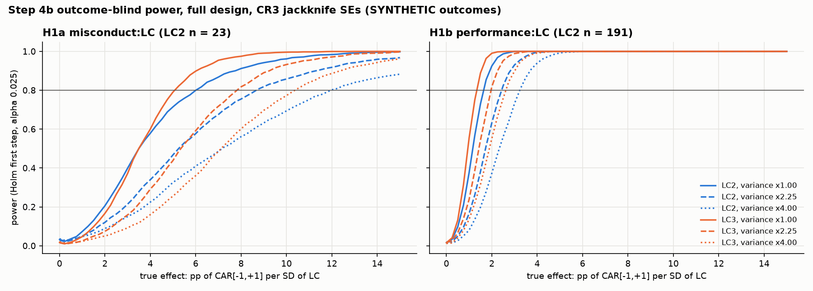

Does concentrated leadership amplify the market's reaction to CEO departures?
We tested this on 739 US CEO departures. Across every preregistered specification, firms with more concentrated leadership did not react detectably differently. For performance-related dismissals the null is fairly tight. For misconduct-related departures the data are too thin to say anything either way.
Verdicts
H1a · misconduct × LC
inconclusivePer SD of leadership concentration, relative to voluntary departures. The preregistered minimum detectable effect is 8.7 pp, so this test is underpowered. A null here is not evidence of no effect.
H1b · performance × LC
inconclusiveThe interval's lower end sits 0.11 pp below the 2.4 pp minimum detectable effect, so the test just misses "not supported". Effects much beyond 2.5 pp per SD are effectively ruled out.
Outcome: CAR[−1,+1], the three-session abnormal return around the announcement, in percentage points (log returns). Verdict inference uses CR3 (jackknife) standard errors clustered by event month.
The question
When a CEO leaves, does the stock react more strongly at firms where leadership is concentrated in one person? We measure leadership concentration (LC) from the last proxy statement or 10-K filed at least 30 trading sessions before the announcement, so it predates the news. The primary measure (LC2) averages two flags: the CEO is a founder, and the CEO also chairs the board.
- H1a, adverse-news amplification: misconduct departures hit concentrated firms harder than voluntary ones.
- H1b, attenuated replacement benefit: performance dismissals help concentrated firms less.
LC is called "leadership concentration" throughout. The preregistered rule for calling it "leadership vulnerability" was not met.
From database to sample
Departure types come from the Gentry et al. CEO dismissal database. 539 events had no current ticker and could not be priced without licensed data, so the sample over-represents firms that still trade.
How LC differs by departure type

Results

| Term | Estimate (pp/SD) | CR3 95% CI | Holm p | CR1 p | Wild bootstrap p | Robustness negative |
|---|---|---|---|---|---|---|
| H1a misconduct × LC2 | −2.91 | [−22.25, +16.42] | 1.00 | 0.55 | 0.64 | 4 / 4 |
| H1b performance × LC2 | −0.43 | [−2.54, +1.69] | 1.00 | 0.71 | 0.80 | 4 / 4 |

Compared with matched dates at the same firms (same LC2, no event), no departure type shows a different LC2 slope. For misconduct the difference is −2.3 pp [−17.5, +12.9].
Sensitivity and exploratory checks


Method in brief
Normal returns. Market model on SPY plus a leave-one-out industry basket, fitted on sessions −252 to −31. It was chosen among four candidates on 5,000 placebo dates before 2015, where its 5% test rejected 4.7% of the time.
Model. CAR ~ type × LC2 + type × idiosyncratic volatility + controls (tenure, planned departure, successor named, size, pre-event return, industry) + event-month fixed effects.
Inference change, decided before seeing outcomes. On simulated null outcomes with the real design, the preregistered month-clustered standard errors gave false positives for H1a 20–21% of the time at a nominal 5%. The cause is a handful of high-leverage misconduct events. Verdicts therefore use jackknife (CR3) errors, whose simulated size was 4.7–6.7%.
Blinding. All returns were computed, then sealed with SHA-256 hashes. The preregistration was frozen, with power and decision rules, before any outcome was examined.

Limitations
- Few misconduct events: 23, of which about 17 are informative after month fixed effects.
- Survivorship: 539 departures at firms without a current listing could not be priced.
- Measurement: LC2 replaces the preregistered three-part measure (a disclosed amendment). The founder and duality flags come from a rule-based extractor validated against AI coders, not humans. An AI audit found about 30 missed duality flags among 48 flagged cases.
- Earnings overlap: 22% of departures coincided with an earnings release and were excluded.
- Departure codes: they come from media coverage. On announcement-day text alone, only 19 of 53 misconduct codes were codable as misconduct.
- Test size under stress: placebo test size rises to 6.8% in high-stress markets.